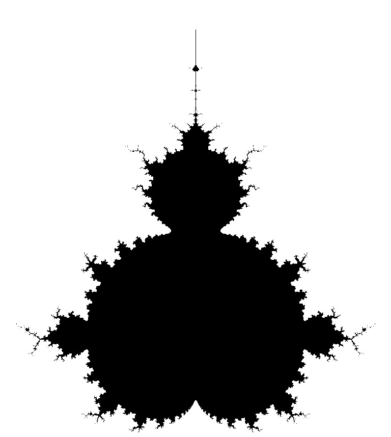

James Hazelden

Research and Personal Blog
Email:
j.a.hazelden@gmail.com
YouTube
Articles:
Research Related:
Current Research Project
Simple Exploration:
Training Neuronal Circuits with Finite Difference
,
First Pass on a Difficult Task:
Interfacing BNNs and Spiking Data
,
Building New Techniques and Theory:
Loss Landscapes Emerging from BNNs
,
Returning to Harder Tasks with New Methods:
Tackling Hard Tasks with BNNs
,
Applications to SNNs Using new Techniques:
New Techniques on SNNs
,
Personal Projects:
Soft Body Physics
,
Hazey: Designing a GUI Builder
,
Space Log
,
Voronoi Diagrams in 2- and 3-D
,
Random:
Coffee Brightness as a Function of Time